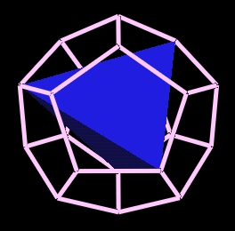
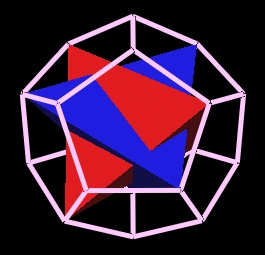
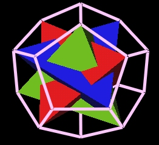
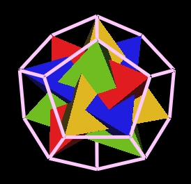
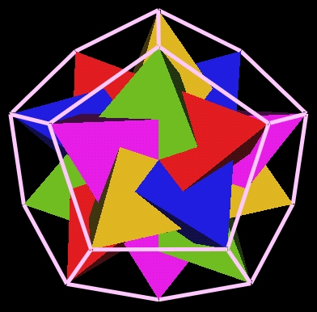
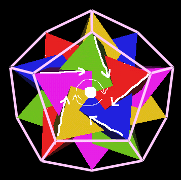
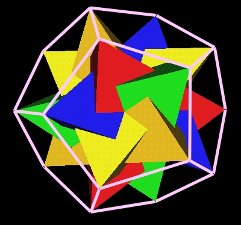
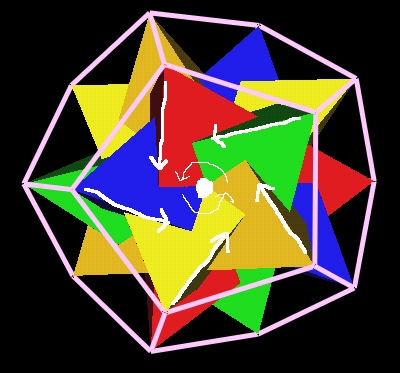

It is known that the regular Tetrahedron "fits" into the regular Dodecahedron in a "rational" way. That is, the 4 vertices of the Tetrahedron can be oriented and scaled to match exactly with 4 of the 20 vertices of the regular Dodecahedron
This is one way of connecting the 2-3 fold symmetry of the Tetrahedron with the 5-fold symmetry of the regular Dodecahedron. (There are 2 other ways to do this that I am aware of.)
The regular Dodecahdron has 20 vertices. The tetrahedron has 4 vertices. It turns out that you can "fit" 20 / 4 = 5 regular tetrahedra inside the regular Dodecahedron.
I recently discovered that you can do this in 2 different ways such that no 2 tetrahedra share the same Dodecahedron vertex.
Here is a sequence of images which shows the build up of 5 tetrahedra inside the regular Dodecahedron.
One...

Two...

Three...

Four...

Five...

Now we are about to discover something interesting...
Looking through a Dodecahedron face at the five tetrahedra, we see that the tetrahedra's edges go from the Dodecahedron's vertices "down" into the Dodecahedron. And the edges go toward, but not directly at, the center of the face.
Because the tetrahedra edges don't go directly toward the face center, but rather, skew past it, there is defined a "vortex-like" twist induced by the tetrahedra.

In the above image, the tetrahedra seem to suggest a clockwise twist.
This reminds me, a little, of water vortices (or spirals) in which you can see that the inner surface of the water funnel is not smooth but has ripples, or "threads" to it. And the threads merge together as they spiral deeper into the funnel.
Now, by rotating this regular Dodecahedron, we find that all the faces have the same clockwise orientation.
I then found that it is possible to position the tetrahedra so that they give a counter-clockwise "twisting" orientation.

To see this more clearly, I have drawn in the edges.

I do not know if any of this has any application.
Click here to run the interactive Java 3D program which produced these images.
Use keys 1 and 2 to rotate, 5 and 6 to rotate, 9 and 0 to zoom.